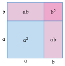

Apartado 5.4
Identidades notables
Hay tres productos que aparecen con tanta frecuencia que conviene saberlos de memoria. Se llaman identidades notables.

El área del cuadrado de lado \(a + b\) es \(a^2 + 2ab + b^2\).
5.4.1
Desarrolla:
- \((x + 5)^2\)
- \((4x - 1)^2\)
- \((x + 7)(x - 7)\)